THE TECH EDIT
기술의 변화, 매일 한눈에.
카메라 · 스마트폰 · AI, 해외 테크 소식을 모아 전합니다.
최근 발행2026-10-14
새로 들어온 소식
LATEST STORIES최신 뉴스
전체 3,663개 기사SK하이닉스, 반도체 수요 강한 성장세 전망…광주 팹 조속 착공 약속

REDMI Note 17 Pro 리프레시 에디션 스마트폰 출시: 6GB+256GB 버전, 첫 판매 가격 1,399위안부터
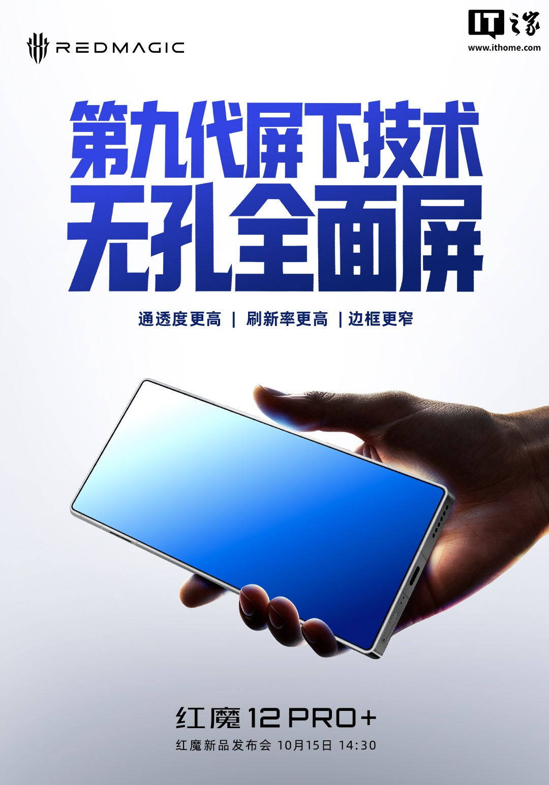
레드매직 12 Pro+ 스마트폰, 업계 최초 185Hz 풀스크린 및 185Hz 고주사율 디스플레이 제어 칩 탑재 공식 발표
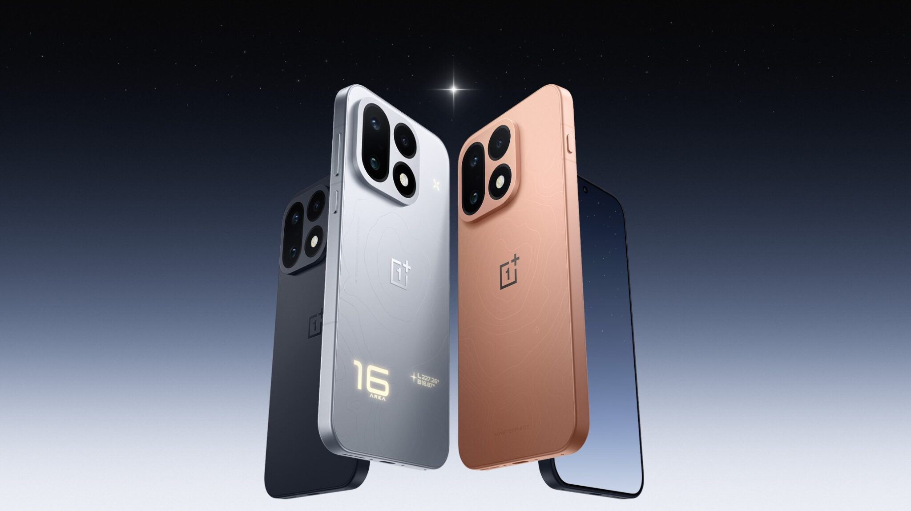
OnePlus 16R, 망원 카메라 부활 및 스냅드래곤 8 엘리트 Gen 5, 165Hz 디스플레이 탑재 전망
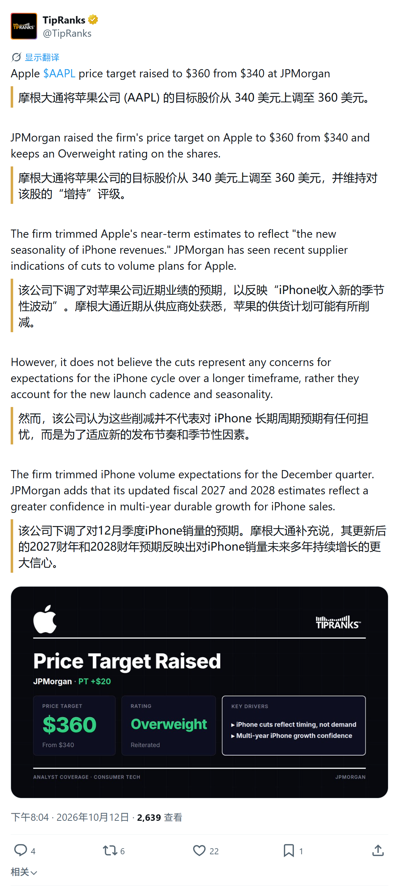
JP모건, Apple iPhone 18 Pro 시리즈 주문량 삭감 루머 반박, iPhone 17 Pro보다 수요 높아

IDC: 3분기 중국 스마트폰 출하량 전년 대비 15.4% 감소, Huawei 역성장 속 전년 대비 증가, Honor 역성장 속 전월 대비 증가
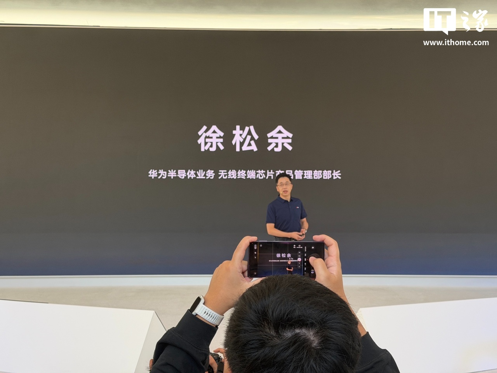
Huawei 루이잉 Z10 모듈 카메라, 하이실리콘 자체 개발 50MP 1인치 RYYB 센서 탑재
전화, 문자 불가: Huawei 공식 웹사이트, 스마트폰 간 통신 공유는 네트워크 공유 기능(eSIM 포함)만 지원한다고 명시
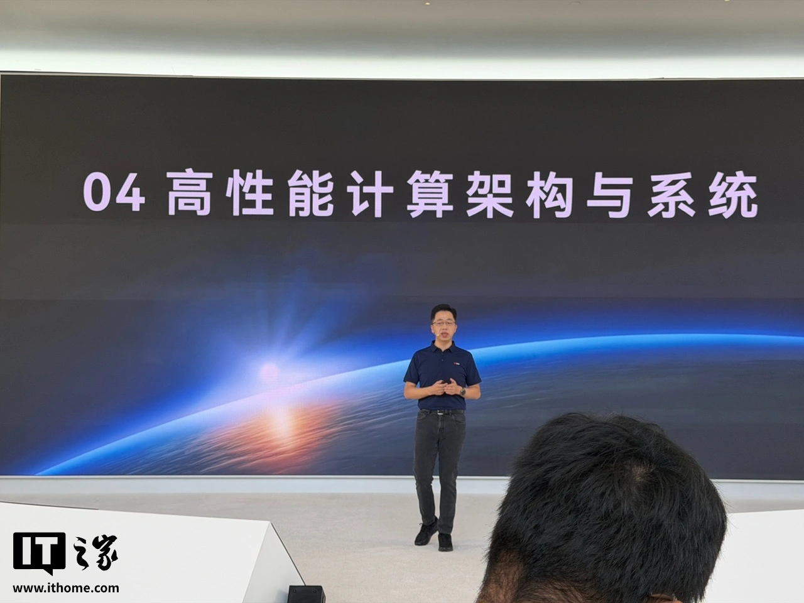
Huawei 쉬송위: Kirin 9050 Pro 마량 GPU 성능 40% 향상, 업계 최초 2억 고화소 융합 ISP 탑재
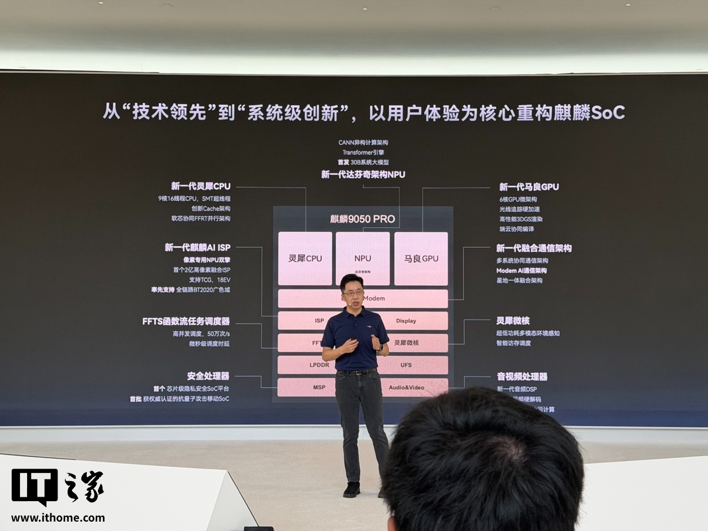
Huawei, Kirin 9050 Pro 칩 상세 아키텍처도 최초 공개: 중국 반도체 업계 지원으로 양산 성공, 미래는 개방 협력에 달려

Huawei 쉬송위: Kirin 9030 시리즈는 중국 반도체 산업의 '정점'이자 각 분야의 노력이 집대성된 결과물이다
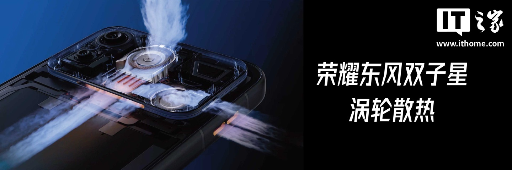
Honor WIN2 시리즈 스마트폰: 듀얼 방열 아키텍처 최초 공개
일부 Samsung Galaxy S24/S25/S26 시리즈 스마트폰, One UI 9 업데이트 후 홈 화면 진입 불가 문제 발생
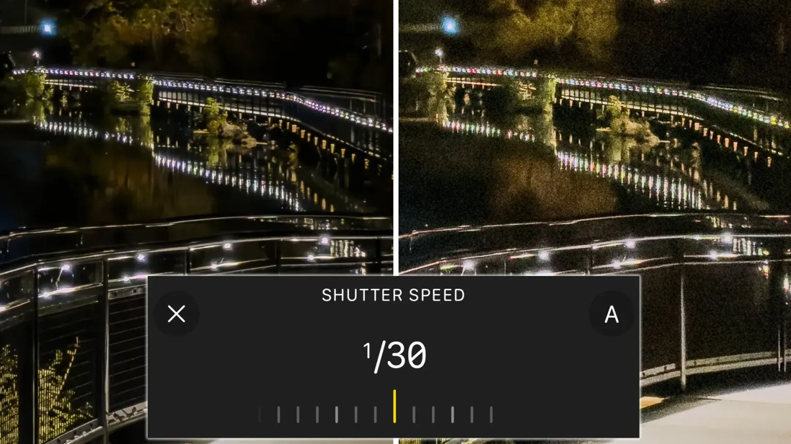
DPReview, Apple iPhone 18 Pro/Max 수동 셔터는 단일 프레임만 촬영하며, 저조도 환경에서 노이즈 증가
"중국 식각 장비의 아버지" 인즈야오, 국내 반도체 장비 기업에 "개별적인 소형 선박으로는 항공모함과 순양함을 이길 수 없다"며 산발적인 발전을 경고
카시오, 사파이어 글라스 및 트리플 센서 기술 탑재한 GWFD1000BC-1 G-Shock Frogman 미국 출시
Nothing CEO 칼 페이, Apple 첫 폴더블 스마트폰 iPhone Duo에 대해 "살 가치 없다"고 평가
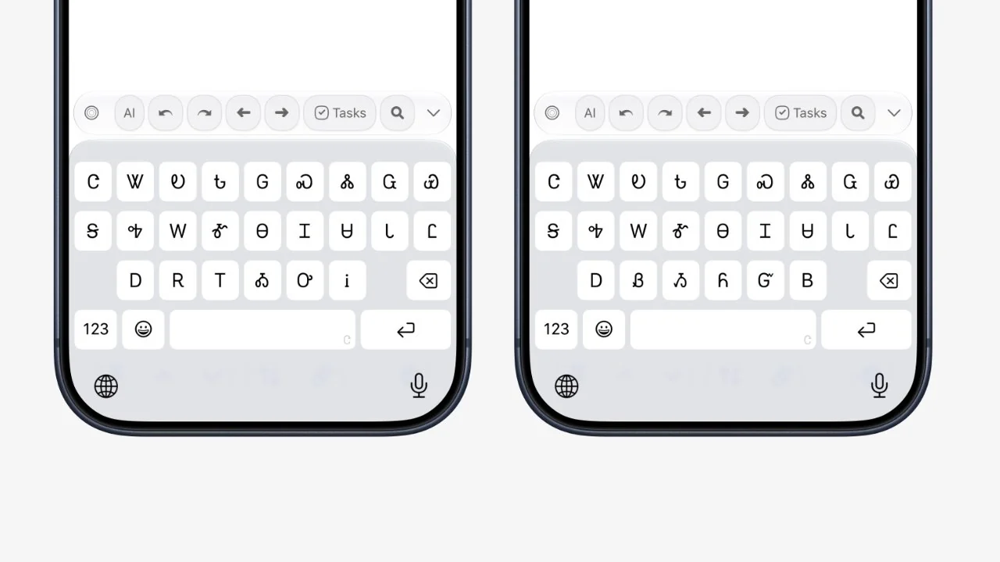
연결: Apple iOS 27, 멸종 위기 언어를 iPhone 18 Pro 등 스마트폰에 담아 구한다
Apple, 카메라와 벽걸이 버전 갖춘 스마트 디스플레이 HomeView 출시
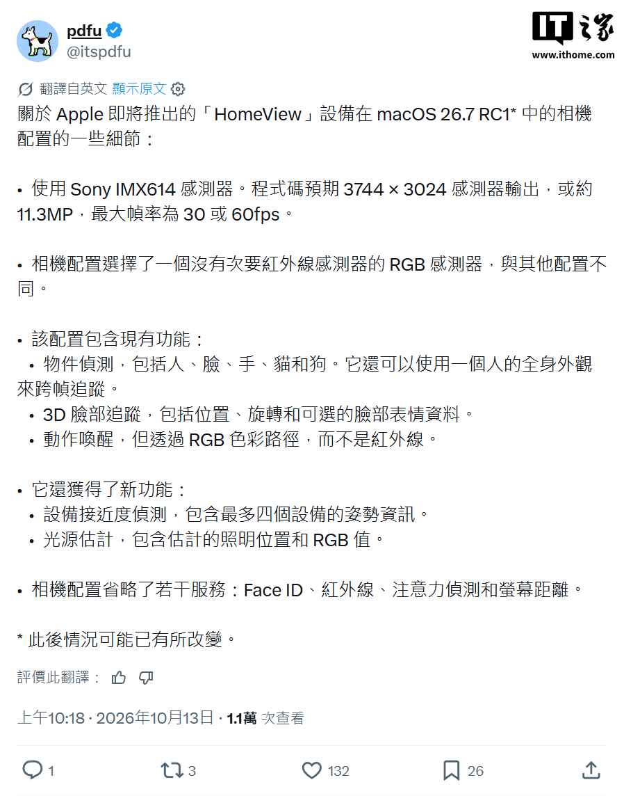
Apple 최초의 스마트 홈 허브 HomeView 카메라 사양 유출: 1,130만 화소 Sony IMX614 센서
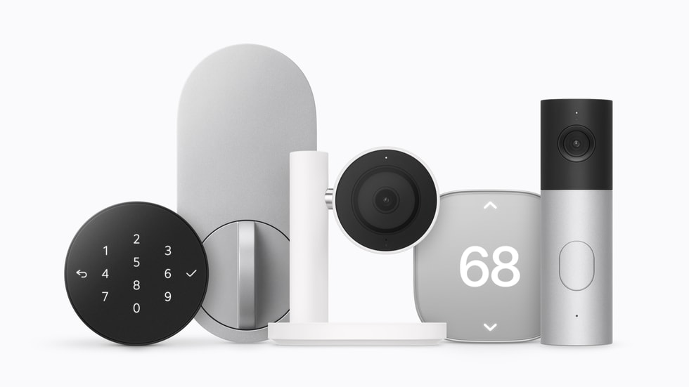
Apple, 스마트 카메라, 비디오 초인종, UWB 잠금장치, 온도 조절기가 포함된 홈 컬렉션 출시
검색 결과가 없습니다
다른 검색어를 입력하거나 필터를 초기화해 보세요.